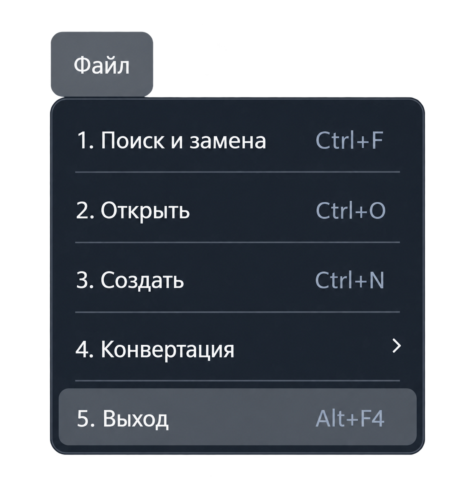

Функция "Выход"
Данная функция предназначена для завершения работы программы.
Путь и вызов
- Нахождение в программе
- Верхнее меню → "Файл" → "Выход"
- Горячие клавиши
- Alt + F4
На изображении показано нахождение данной функции в программе:

Данная функция предназначена для завершения работы программы.
На изображении показано нахождение данной функции в программе:
